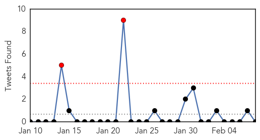
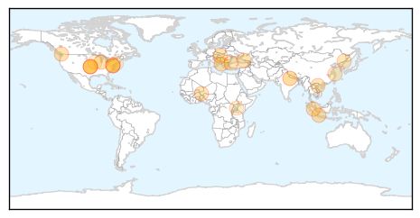
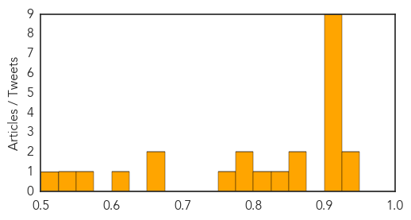
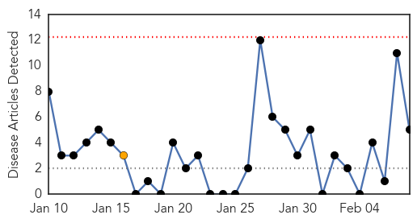
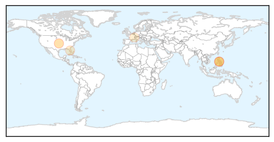

Unknown
30-Day Web Trend
3 alerts, 9 warnings
30-Day Twitter Trend
2 alerts, 0 warnings

Article Locations
Article Confidences
Top Articles:
- 0.941
- RCH still 'very safe' despite superbug
- 0.937
- Is aging hospital to blame for superbug outbreak?
- 0.921
- Bacteria limits IU Health patients' water use
- 0.917
- Chicago Tribune
- 0.917
- Chicago Tribune
- 0.917
- Chicago Tribune
- 0.917
- Chicago Tribune
- 0.917
- Chicago Tribune
- 0.917
- Chicago Tribune
- 0.914
- Bacteria limits IU Health patients' water use
- 0.910
- The world windows to Thailand
- 0.866
- Thousands rally in Niger in support of president
- 0.866
- Turkish police fire teargas to break up Internet protest
- 0.845
- Authorities asked to keep close watch on bird flu
- 0.823
- Bird flu kills one more in China
- 0.791
- The scourge of shingles - Isthmus
- 0.789
- Americans Are Feeling Healthy, and That Makes These 2 Drugstores Sad -- The Motley Fool
- 0.771
- H7N9 Bird Flu Vaccine Development Team reports Initial Success
- 0.660
- India village once famous for saris now known for TB epidemic
- 0.651
- 8 health centres lying idle in Pallisa
- 0.613
- Tuberculosis Rages In Impoverished Indian Villages
- 0.569
- Virus killing 5 million pigs spurs hog-price rally
- 0.533
- Can You Die From Drinking Too Much Soda?
- 0.501
- Tuberculosis diagnosed at Watkins Mill High School
Top Tweets:
-
No tweets found for Feb 08, 2014
Measles
30-Day Web Trend
0 alerts, 1 warnings

30-Day Twitter Trend
0 alerts, 0 warnings

Article Locations
Article Confidences

Top Articles:
Top Tweets:
-
No tweets found for Feb 08, 2014